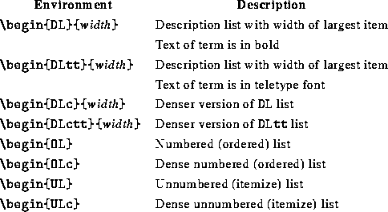
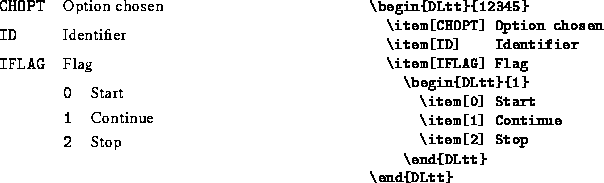

LaTeX's standard list environments have been augmented by introducing description (definition) lists where the width of the term can be specified. Lists have also been given a ``dense'' version, i.e., there is less spacing between the items. The table below gives an overview of these new list environments.

Examples of the use of these lists are
